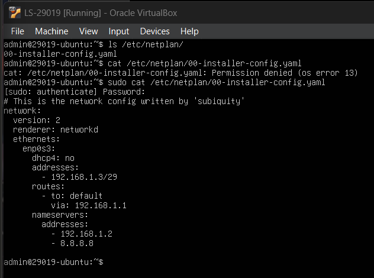
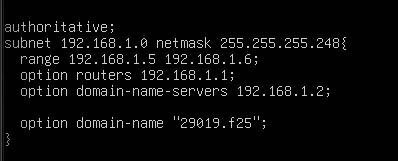
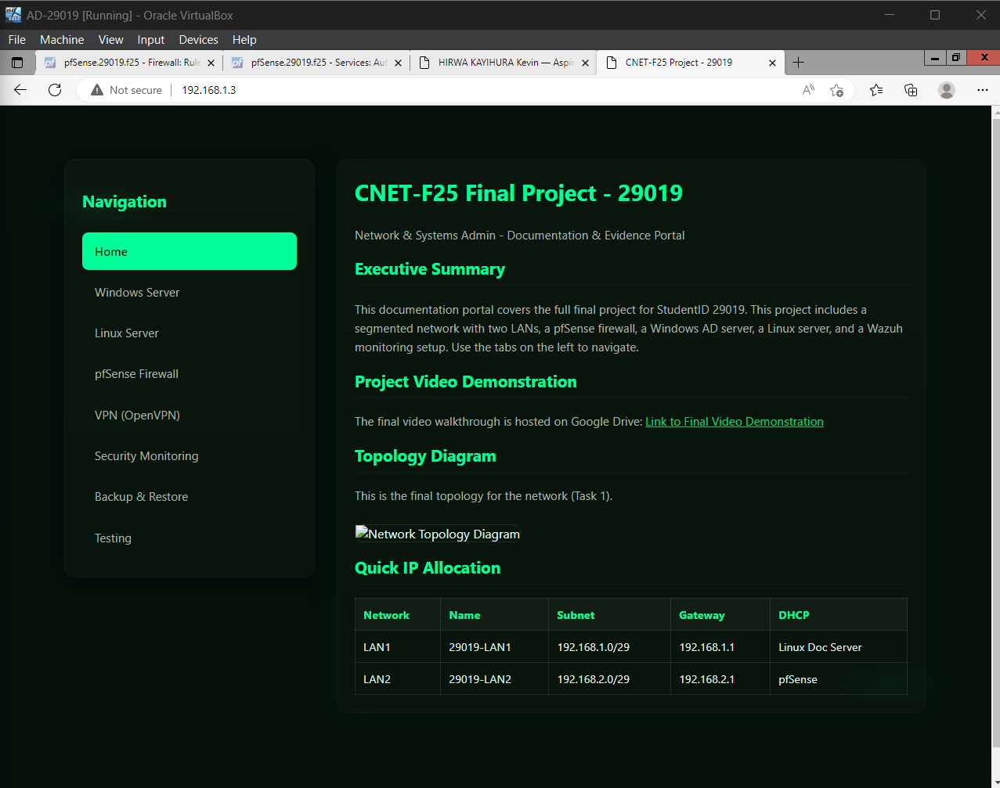

Navigation
Linux Documentation Server (DHCP, Web, Samba)
This section provides evidence for Task 3, detailing the setup of the Linux server as the DHCP provider for LAN1, the host for the multi-tab documentation website, and the file server for GPO-enforced shares.
1. Static Network Configuration
Linux Server IP Address
The "ip a" command output confirms the server is configured with the required static IP address of 192.168.1.3/29 on the LAN1 segment.
2. DHCP (LAN1) Service
DHCP Configuration File
The configuration file /etc/netplan/00-installer-config.yaml/ confirms the Linux server is providing DHCP services only for the 192.168.1.0/29 subnet, fulfilling the requirement for split DHCP responsibility. With the range of 192.168.1.5 to 192.168.1.6, because the other IPs have been configured statically.
DHCP Service Status
Screenshot of the "systemctl status isc-dhcp-server" command output, confirming the DHCP service is running successfully.

3. Documentation Web Server (Apache/Nginx)
Documentation Site Homepage
The homepage of the multi-tab documentation site, hosted via the Linux web server, is shown. This site serves as the final report and contains all evidence and explanations.
4. Samba / SSH Access
Samba Share Access
A screenshot from a Windows Client PC successfully accessing the Samba shares hosted on the Linux Server, through //192.168.1.3/docs_share from the windows PC confirming file sharing functionality across the LAN1 network. Meaning whatever file I drag into that directory, will appear in the linux server.